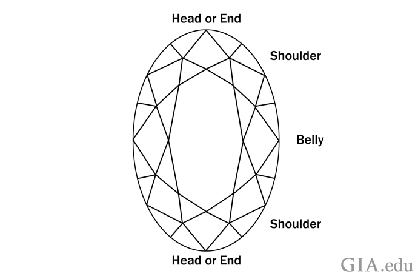
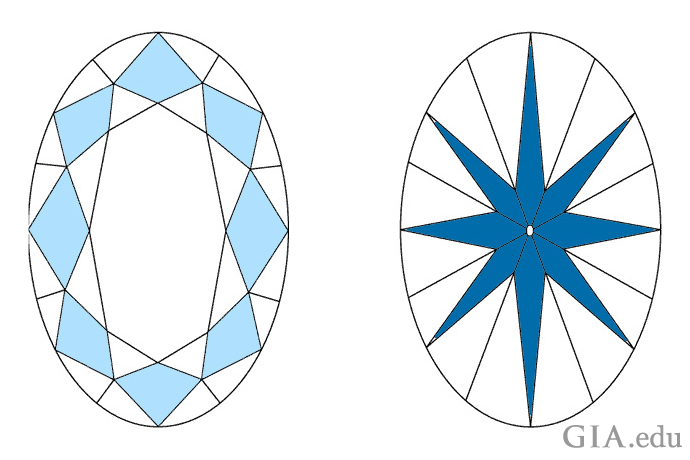

Oval:
An oval diamond is a fancy shape. You can think of it as a round brilliant diamond stretched on its sides, or a rounded version of a cushion shape or cushion brilliant. To pick a beautiful oval diamond, you need to know its parts. Head or end: The “tips” of the oval. Shoulder: The curved area reaching from the head/end to the belly. Belly: The central area where the sides curve out the most.
You’ll typically find oval diamonds cut in the brilliant faceting style, which means the diamond has 57 or 58 facets, like a standard round brilliant, giving it similar visual qualities. An oval diamond can have a variety of facet arrangements, but the most common is eight bezel facets on the crown combined with eight main facets on the pavilion. There are compelling reasons why many people love oval diamonds: Because the oval diamond has a larger surface area than a round diamond of equal carat weight, it can appear larger to the eye. The oval shape can make the finger seem longer, and because the shape doesn't have sharp angles or corners, an oval diamond is less prone to chipping compared to other fancy shapes.
